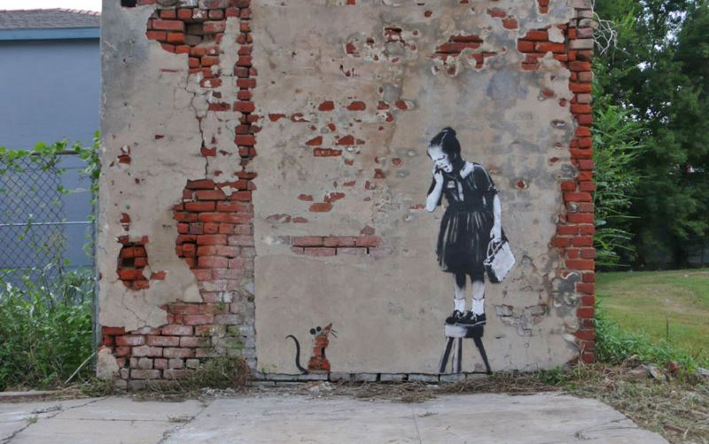

Credit
This piece by Banksy called Girl and Mouse (also known as Girl on Stool) is the natural decay of the masonry has been used by adding a tail and ears. The piece was created by Banksy on a visit to New Orleans in 2008 along with many others in the city. This piece is still visible although it is fairly faded and the girl has had other graffiti tagged over her.
2008-02
Spray Paint
New Orleans, USA